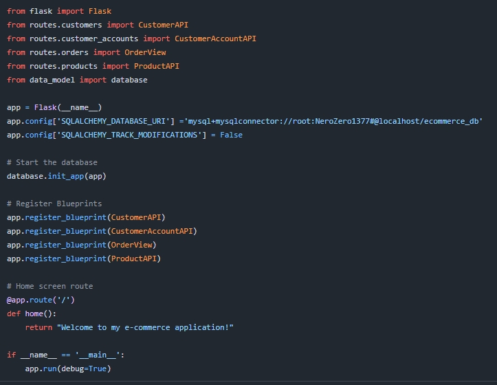
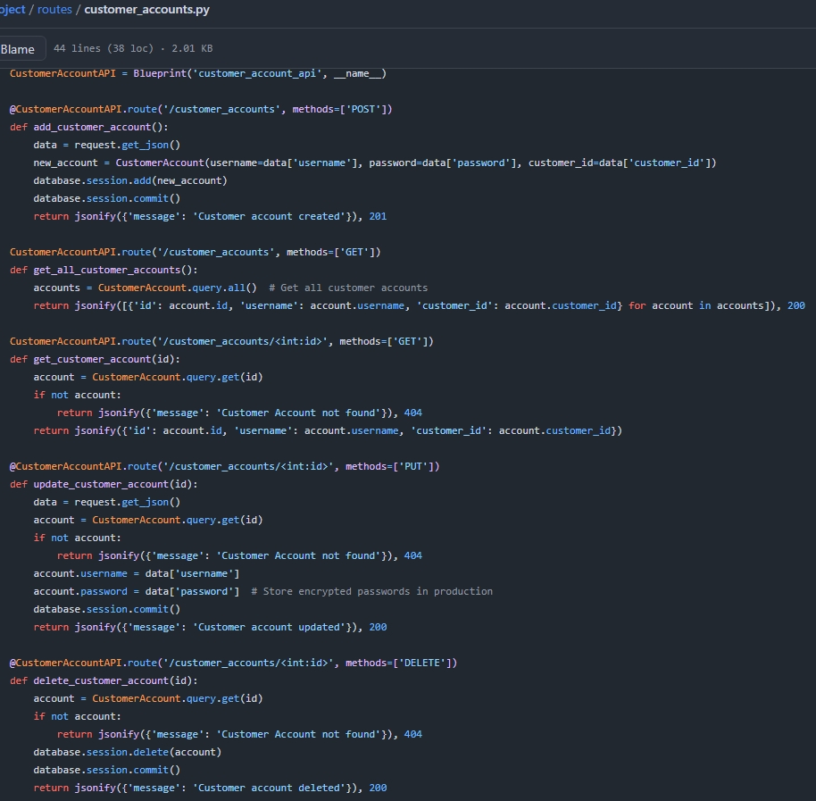
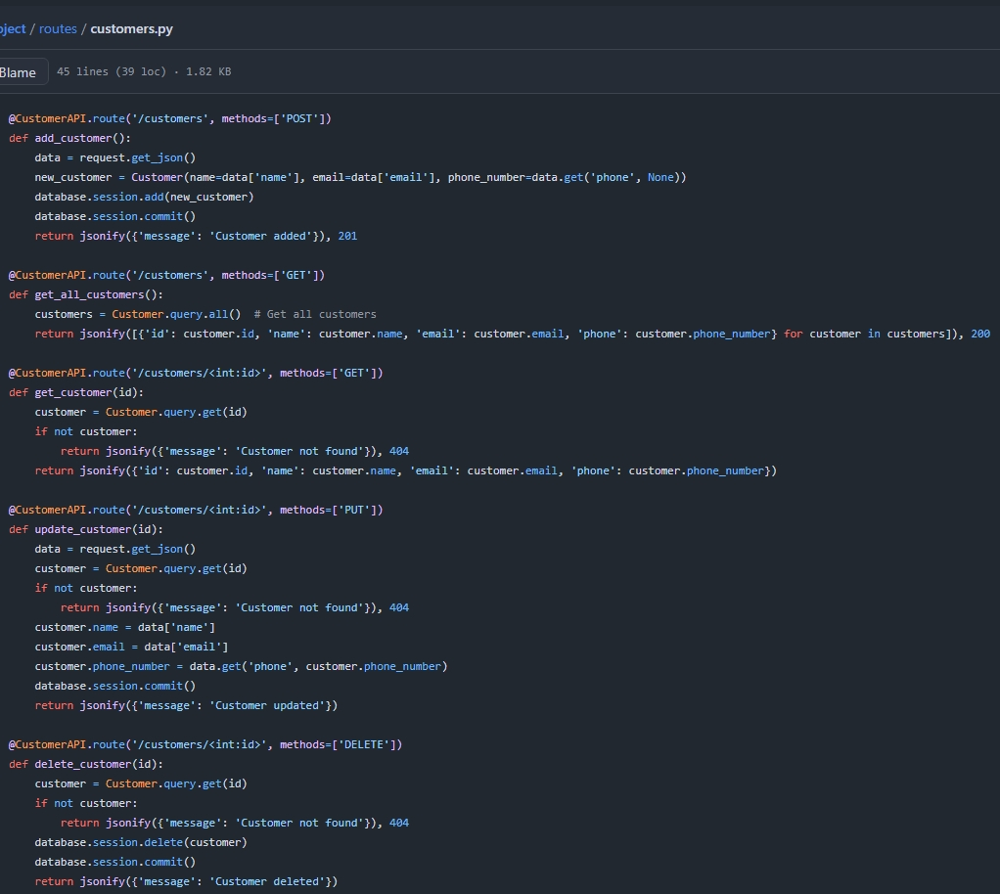
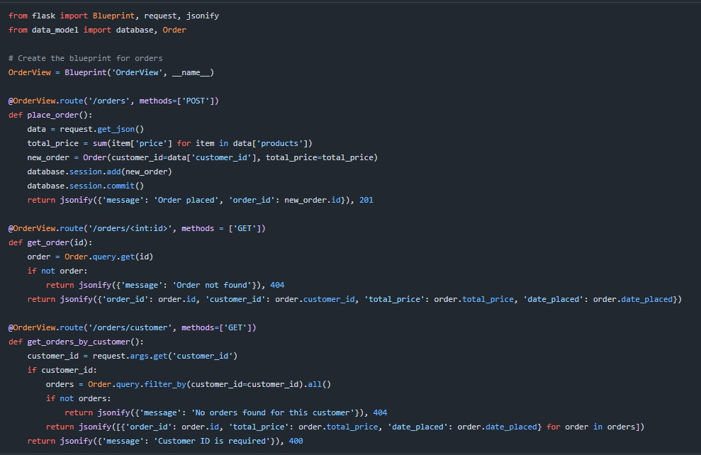
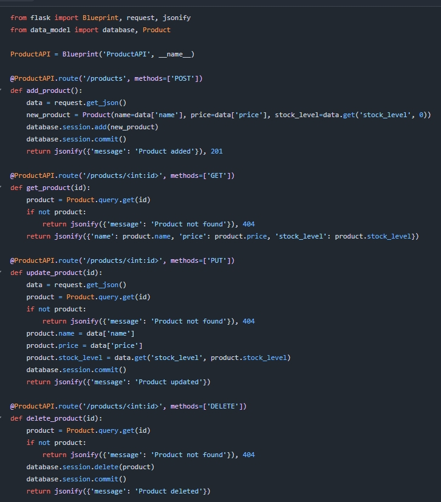
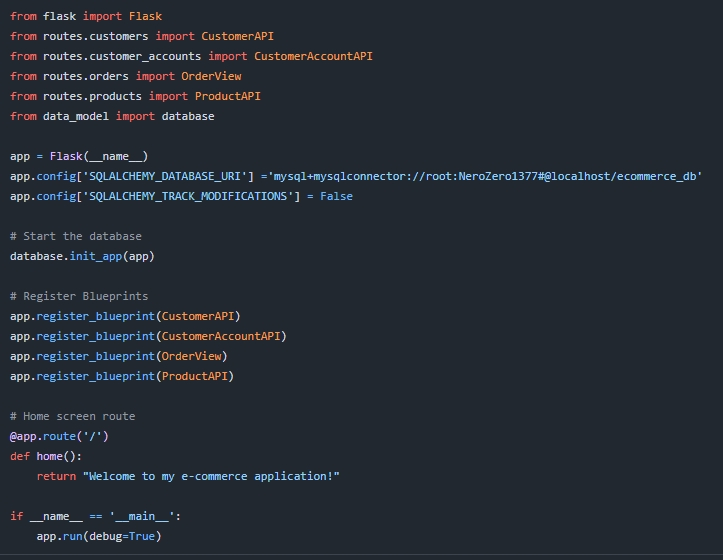
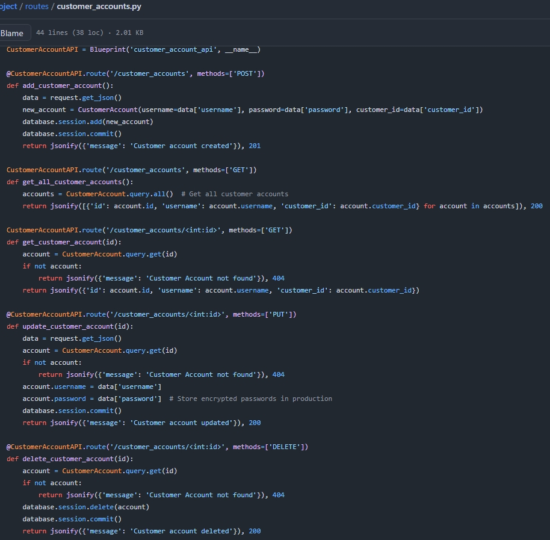
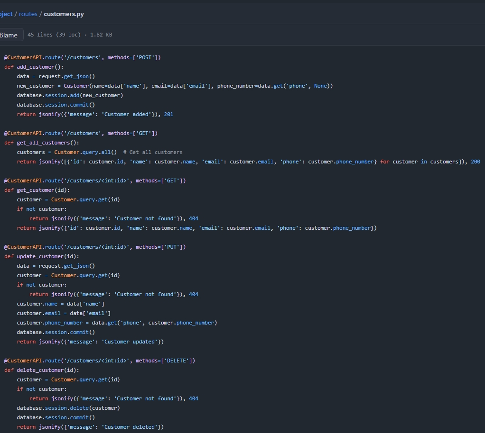
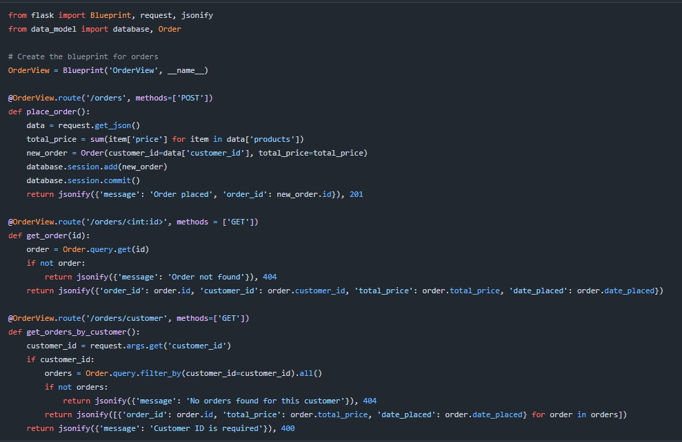
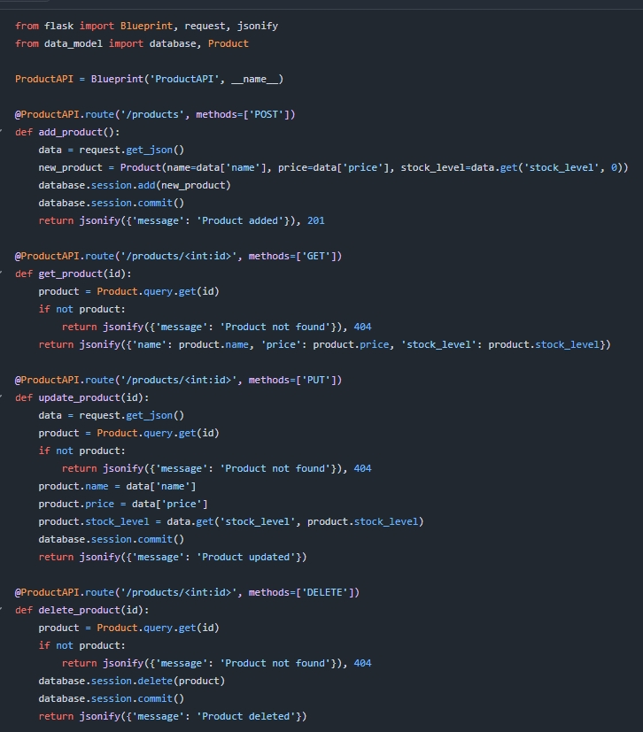

My Projects
Contact Management System

I had to create a functional command-line-based application that simplified the manegment of my contacts. This application allows you to add, edit, delete, search, display, export, and import contacts easily.
Technologies: Python
View on githubLibrary Management Computer System


I had to utilize Object-Oriented Programming (OOP) principles in python to develop an advanced library system. This application allows users to manage books, users, and authors.
Technologies: Python
View on githubLibrary Manament System with Database Integration


I had to integrate a MySQL database with python to develop an advanced library management system an improved and more organized version of my first library system. This application manages books, users, and authors in a library. The application interacts with a MySQL database to store and retrieve data.
Technologies: Python, MySQL
View on githubE-Commerce Application
 










I had to create an API utlizing Flask and MySQL. It allows customers to manage their accounts, place orders, and interact with product listings.
Technologies: Python, MySQL, Flask, Postman, SQLAlchemy
View on github